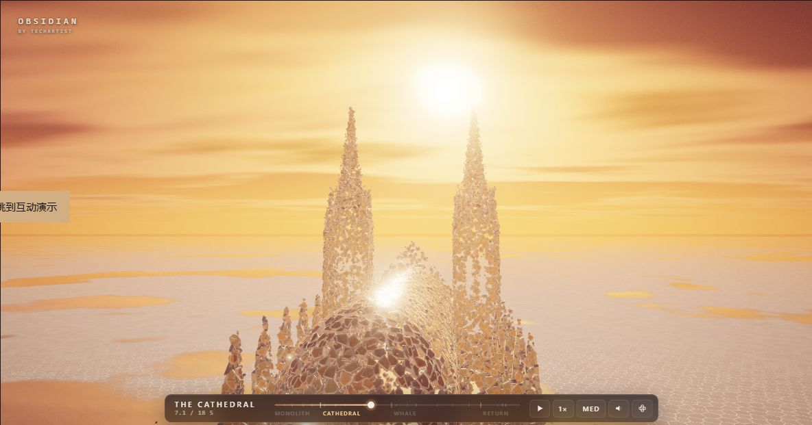

这个库是什么
它是一段浏览器中的实时三维视听作品。作者通过程序化几何、碎片重组、光照、运镜与合成音效，把巨石、玻璃教堂与鲸鱼串成约 18 秒的作品。可迁移的核心是这套组织变化的方法。
OBSIDIAN / 程序化视觉研究
巨石、教堂与巨鲸，继续变成星系、
龙卷、双螺旋与文字，再回到起点。
一段可以调节、聆听与导出的碎片之旅。
当前最成熟的价值是电影片头、品牌宣传、发布会开场与舞台视觉。进一步的复用，是围绕具体资产和输入，做成可定制的视觉工具。下面把“是什么、怎么做、能做什么、适合用在哪、还缺什么”放到同一张图里。
它是一段浏览器中的实时三维视听作品。作者通过程序化几何、碎片重组、光照、运镜与合成音效，把巨石、玻璃教堂与鲸鱼串成约 18 秒的作品。可迁移的核心是这套组织变化的方法。
巨石表面经 Voronoi 分割并挤出厚度；目标形态采样成位置、朝向和尺度，再用高度分带与角度排序配对。GPU 按碎片编号和时间求姿态，四张浮点状态纹理驱动合并网格。阴影、反射、光束、景深与调色共同完成画面，整帧仍有多个渲染过程。原理与源码定位 ↗
四种可调三维形态与原作共用碎片和渲染管线；增加 48 秒声画循环、2 秒转场、运镜、章节定位、四种新声音以及带声音的 MP4 / WebM 导出。已验证 48 秒、720p、30 fps、H.264 / AAC 双声道 MP4。完整能力与验证范围 ↗
现阶段可创作片头、文字揭示、宣传片转场和舞台循环视频。替换文字、参数与编排可以形成系列内容；定制品牌标志或产品，仍需资产接入。展馆要补输入与长期运行；科普和数据故事要补真实模型、语义、标签与验证。商业价值取决于具体内容和用途。
文字与标志、建筑生长、晶体与分形、星系与轨道、龙卷与烟羽、鸟群鱼群、波传播、音乐驱动、数据关系、触摸与身体参与、产品装配、材料再生，共十二类方向。可分别沿着目标形态、运动规则、外部输入和对象语义扩展。十二类场景与所需改造 ↗
当前运动由编排规则计算；真实天体、流体、分子或机械装配需要相应求解器、数据和约束。尚无任意模型一键导入、通用可视编辑器、音频输入分析与姿态识别。目标设备上的帧率、长期运行与编码支持仍需验证。来源与许可 ↗

让碎片开始旅行。
本地资源 · 默认低画质 · 48 秒自动循环2 秒碎片转场 · 连续环绕与升降镜头 · 结尾重聚巨石并自动接回开场。拖动时间轴暂停观察。
导出当前参数与画质下的完整 48 秒声画作品。原作音效与四种新声音随形态衔接，使用编排镜头，无网页界面。
MP4 / WebM · 本地逐帧生成 · 导出采用上方音量，试听静音不影响“包含声音”选项 · 无需上传。
正在检查此浏览器的声音与视频编码支持…
实际碎片数随画质和生成结果变化。 选择一个原作形态即可暂停观察；画面底部可拖进度、切速度、开启声音。打开原作录制模式 ↗
材质、尺度和形态持续改变，观众仍能追踪同一批碎片。适合表达重生、循环、连接与品牌转化。
叙事价值巨石、教堂、鲸鱼和音效由代码构造。调整生成规则和采样目标，就能探索新形态，而无需逐帧制作碎片动画。
创作价值合并几何体、GPU 状态计算和分档渲染配合工作。它提供了研究大量对象变形与电影化表现的完整样本。
工程价值它是一段精心编排的实时视觉作品。碎片运动通过时间函数计算；扩展为可信的物理或科学演示，还需要相应模型、数据和验证。
| 能力 | 你能看到的结果 | 迁移时要做的事 |
|---|---|---|
| 程序化碎裂 | 裂纹与真实碎片边界对应 | 为新物体定义曲面展开或体积分割 |
| 多目标形态重组 | 同一块碎片在巨石、教堂和鲸鱼之间旅行 | 生成新目标点、方向、尺度与匹配关系 |
| 有组织的运动 | 旋涡、群舞、爆散、逐层搭建 | 增加运动函数和阶段衔接规则 |
| 电影化呈现 | 镜面、体积光、辉光、景深与运镜 | 围绕新主题调整材质、灯光和镜头 |
| 交互与输出 | 暂停、时间定位、自由视角、视频 / PNG 录制 | 增加面向使用者的操作与导出流程 |
| 性能分档 | 8 千 / 2 万 / 3.2 万碎片目标及特效裁剪 | 在目标设备上重新测量帧率和资源预算 |
与原作共用立体碎片、GPU 状态计算、材质、阴影和镜面。切换后可调节参数，也可自由旋转视角，观察结构与厚度。
螺旋臂分布在有厚度的三维盘面，旋臂数量与卷曲程度均可调节。
高度影响半径与角速度。调节顶部半径、环绕圈数，观察差速旋转。
两条立体管状螺旋与横向连接共同重组；圈数、半径可以连续调整。
文字正反面与边缘被采样为立体目标；可输入文字、调整厚度和宽度。
四种形态是本研究在上游系统中的新增实现。视觉结构与运动按参数生成，不表示天体、流体或分子仿真。切换模式保留当前碎片姿态作为过渡起点；暂停后调整参数可直接观察结果。
01 替换形态文字 / 标志 / 参数化物体
02 扩展运动螺旋 / 波动 / 定向流
03 接入输入音频 / 鼠标 / 实际数据
04 面向场景交付设备性能 / 无障碍 / 导出
在巨石表面生成 Voronoi 单元并挤出厚度；用参数化几何构造教堂与鲸鱼。固定随机种子让结构能够复现。
研究结论
先从文字或标志入手，验证采样、匹配与轨迹；再按场景加入输入、材质与交付能力。